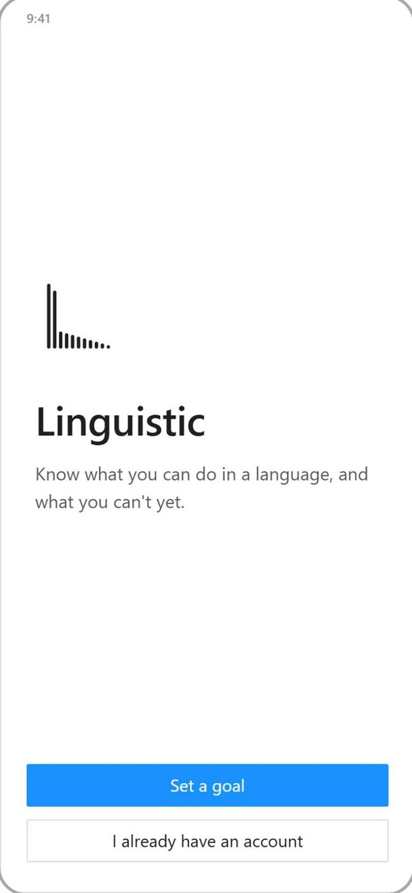
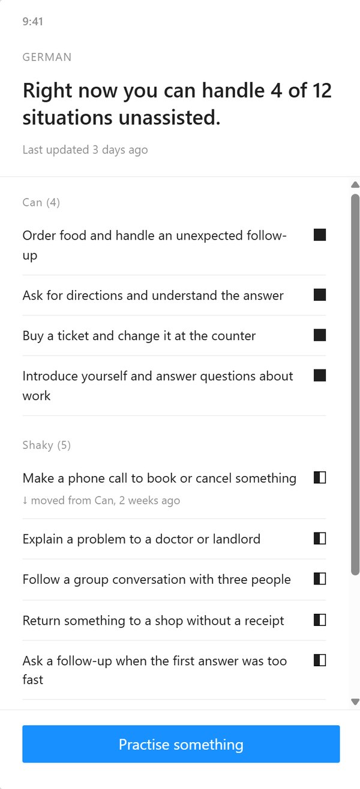
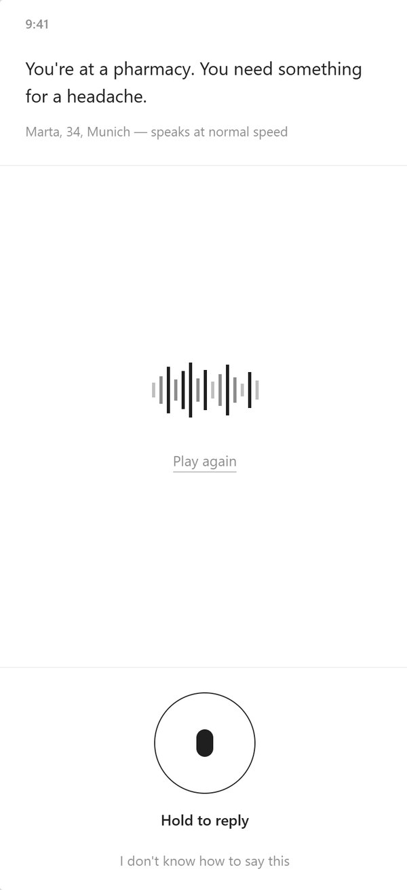
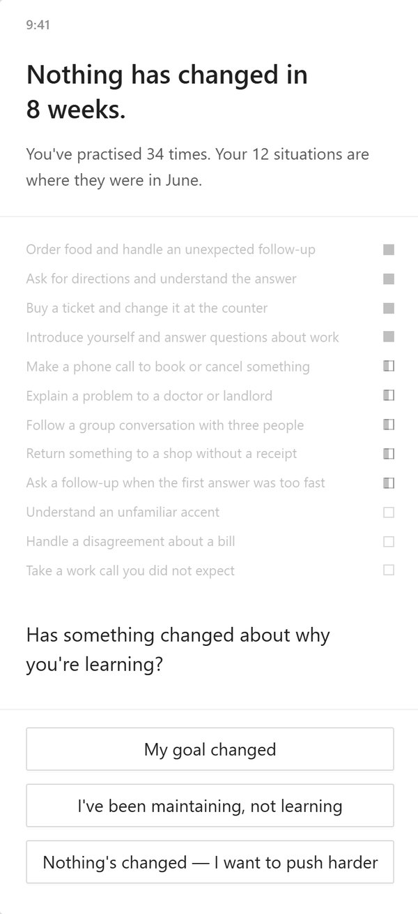
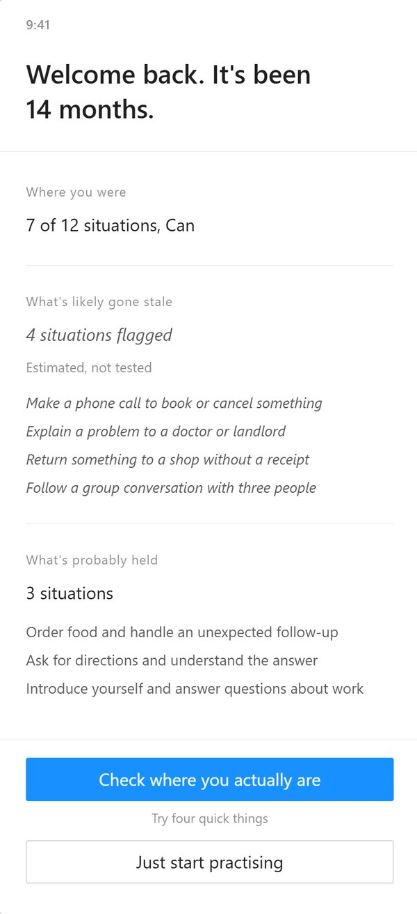
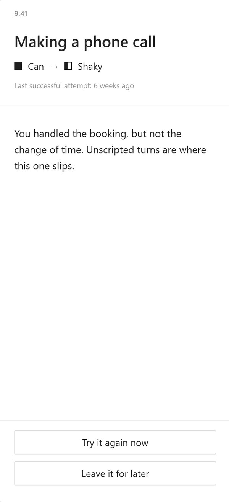
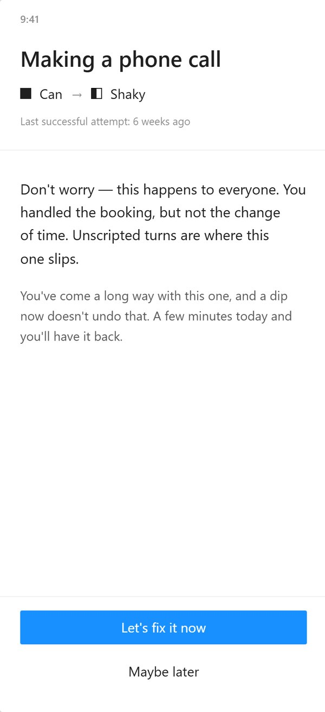

Linguistic Honest progress for language learners.
A language app that tells you what you can do today, and what you can’t yet — instead of how many days in a row you opened it.
Built in a one-week discovery sprint, the same format we run for clients.


At a glance
- Type
- In-house product concept
- Our role
- UX research, product strategy and UX design
- Timeline
- One-week discovery sprint
- Research
- Six learner accounts and eight research papers
- Status
- Concept, not built
The problem
1,500 days. Three languages. No conversation.
This project started with our founder’s own learning record: six months of French, a year of German, then Dutch, on one unbroken streak. Each switch restarted the actual learning. The streak never restarted, because it never measured the language. It measured attendance.
1,500+Days in a row
3Languages
200+Days under two minutes
0Conversations
“If I cannot track the effort, then what was the effort for?”
Our founder, after a 450+ day streak reset to zero following a short break
The streak isn’t the problem. It works as accountability while there’s a real reason to learn: a master’s place, a job abroad, an exam date. The problem starts when that reason disappears.
A.R.’s move to France didn’t happen and his French faded unrecorded. D.T. had a certification goal the app had nowhere to store. A.S. kept opening the app after losing interest in the language. In every case the product kept counting, and noticed nothing.
The research
Rewards work at first. Then they backfire.
These are effect sizes from a meta-analysis of gamified learning (Kim & Castelli, 2021): the gap between learners who got points, streaks and badges and learners who didn’t. Over years, the gamified group did worse. The studies differ in length, so this shows a pattern rather than proof.
Two more studies explain why. Points, levels and leaderboards raised how much people did without changing how competent they became (Mekler et al., 2017). A 2024 meta-analysis found the same split: learners felt more motivated and more capable, with minimal effect on actual competency (Liuyufeng et al., 2024).
Sources
- Kim & Castelli (2021). Effects of gamification on behavioral change in education. Read the paper (opens in a new tab)
- Mekler, Brühlmann, Tuch & Opwis (2017). Effects of individual gamification elements on intrinsic motivation and performance. Read the paper (opens in a new tab)
- Liuyufeng et al. (2024). Gamification enhances student intrinsic motivation, but minimal impact on competency. Read the paper (opens in a new tab)
- Peters, Calvo & Ryan (2018). Designing for motivation, engagement and wellbeing in digital experience. Read the paper (opens in a new tab)
- Bjork & Bjork (2011). Making things hard on yourself, but in a good way. Read the paper (opens in a new tab)
- Kluger & DeNisi (1996). The effects of feedback interventions on performance. Read the paper (opens in a new tab)
What learners said
The ones who could speak never answered with a number.
We asked learners what they could do in the language. Those who never reached conversation answered in time. Those who did answered in situations.
Answered in time
“1,500 days.”
Our founder: app only, three languages, no conversation
“500+ day streak.”
A.S.: kept the streak after losing interest
Answered in situations
“Simple questions yes, complex questions no.”
A.R.: classroom, reached conversation in six months
“I can ask for what I need without things getting complicated.”
S.P.: classroom and daily use, fluent across a decade
No app in the study ever asked the question that produces the second kind of answer.
The idea
Progress you can see, and can lose.
Linguistic replaces the streak with twelve real situations, chosen from the goal the learner sets: an exam, a move, a job. Each situation has a state, and the state moves in both directions.
- CanHandled unassisted, recently
- ShakyHandled with gaps, or not tested lately
- Can’tNot yet handled unassisted
A score that drops from 74 to 61 tells you nothing. “Phone calls moved from Can to Shaky” tells you exactly what to practise. The markers use shape and fill, not colour, so they work for colour-blind users and on paper.
- EvidencedA learner’s account produced the requirement
- ProposedOur design judgement, still to be tested

Key screens
Three moments most apps avoid.

A session with nothing to copy
A named speaker at normal speed, and no transcript, word bank or answer tiles. Tiles train recognition, which breaks the moment a real speaker goes off script. A.R. was conversational in class in Chennai and struggled with native accents in France; this screen is built around that gap.

Noticing a plateau
Thirty-four sessions, and nothing has moved since June. Instead of celebrating the activity, Linguistic asks whether the reason for learning has changed. “I’ve been maintaining, not learning” is a perfectly acceptable answer, and there’s no retention prompt.

Coming back after a break
After 14 months away, the learner sees what has probably gone stale, marked “estimated, not tested”. No reset to zero, no streak repair, no guilt. S.P. took a multi-year break in German and came back at a higher level.
A decision
Telling someone they’ve slipped. Two ways.
The hardest screen in an honest product is the one that reports a drop. We designed it twice and show both, because choosing between them is a real trade-off.

Honest
It says what slipped and why, then offers two equal choices. Research on feedback (Kluger & DeNisi) shows comments aimed at the person lower performance, while comments about the task don’t.

Cushioned
Reassurance first and a loud “Let’s fix it now”. It will feel better in the moment and test better on sentiment. It also makes putting things off the quiet default again, the pattern the product exists to avoid.
What’s next
A concept, and what it would take to build.
The open problem
The app has to know what a learner can really do, and asking them isn’t reliable. It needs to judge spoken attempts. That part is specified, not built.
How we’d test it
Twelve weeks against a standard gamified app, measuring what learners can do unprompted, not sessions completed.
What would prove us wrong
If learners who see an honest drop quit instead of practising, honesty is making the product worse, and the design has to change.
How we researched it: six learner accounts (two classroom learners and four app users, including our founder’s own record) and desk research across eight papers. Learners’ self-rated ability was not independently tested.
Your product
Is your product measuring attendance too?
Logins, sessions, streaks and active seats can all look healthy while people get nothing done. In a one-week discovery sprint we find the outcome your users came for, check whether anything you measure tracks it, and design the screens that do.
More work